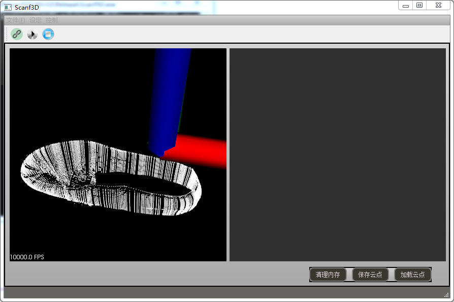
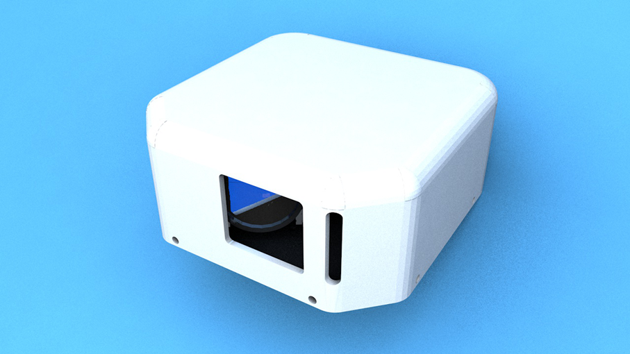

产品介绍：
自主开发的3D相机采用150fps高频率传感器、可调焦线结构光，检测进度高达0.1mm。系统能够实现：三维重建，在线三维检测，三维特征提取、空间定位等功能。
产品效果：
该产品已在福建省华宝智能科技有限公司大量运用，并通过不断的改进创新，可满足用户不同产品检测需求。
应用领域：
本扫描装置可根据工业现场需求，配合机器人及特种设备对工件进行扫描，适用于鞋类制造行业的鞋底扫描、汽配行业钣金件扫描等多种工业领域。同时，产品也可应用于生产检测、物流读码、工业机器人、医疗仪器、包装检测等领域。

3Dpro界面

3Dpro产品